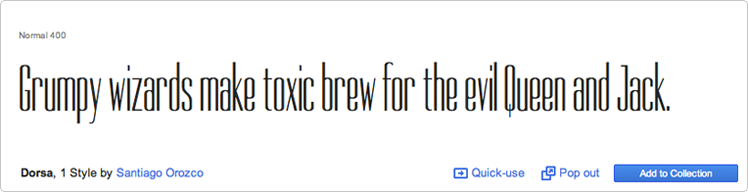
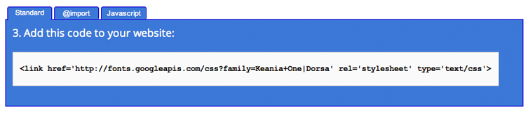

EaselJS Text font
Synopsis: Learn how to use google webs fonts within your CreateJS projects
Topics: Text class, google web fonts
Target: EaselJS v0.4.1 and above
This tutorial is part of the EaselJS GitHub repository.
Check out the repository for more tutorials and a handful of helpful samples.
CSS: Font Primer
When choosing a font it is important to know that browsers will only display fonts that are installed on the viewers machine. Lucky for us CSS has a fallback system: if the font you have selected is not installed, the browser will choose a similar font from a generic font set.
SERIF
Serif fonts have small lines tailing on the end of the main strokes of the letters.
Examples:
Georgia
Times
Times New Roman
SANS-SERIF
Sans-serif fonts have straight ends to letters and therefore have a much cleaner designs.
Examples:
Arial
Verdana
Helvetica
MONOSPACE
Letters and characters each occupy the same amount of horizontal space (Non-monospace fonts have different widths.)
Examples:
Courier
Courier New
CURSIVE
Cursive fonts either have joining strokes or other cursive characteristics, such as handwriting styles.
Examples:
Comic Sans
Monotype Corsiva
FANTASY
Fantasy fonts usually decorative fonts and are often used for titles. They are not designed for long bodies of text.
Examples:
Impact
Haettenschweiler
Basic Implementation
The font property allows for any valid CSS font attribute. The font family property specifies what font
will be displayed. Common font names would be fonts like Helvetica, Arial, Courier, etc.
CSS provides a fallback, since all fonts might not be availble on all computers.
Generic families are these fallback: serif, sans-serif, cursive, fantasy, monospace.
For more information common fonts on all systems click here
If you run the following code you will see a basic "Hello World" message:
Alternatively, you can pass string, font-family and color value parameters to the constructor.
Google Web Fonts
Google web fonts provide a developers/designers the ability to use high-quailty web fonts that they can include within their HTML pages. Having over 600 fonts families to choose from you’ll be hard pressed to find one that wouldn’t work for your pages. One benefit for choosing Google Web Fonts is the caching benefits and bandwidth saving, since those fonts are stored on Google servers. Google has made this process of using their fonts very simple, you’ll be up and running before you know it.
Getting Started
- What you'll need to do first is head over to Google's font Catalog.
- Search for a font called Dorsa then add the font to your collection by clicking on the “Add to Collection” button found on the lower right hand side.

- Once you are ready to use the font, click on “Use” found on the bottom of page.
- Then you'll be prompted to verify your font settings and provide with stub code. Copy and paste the information below and add it to your web page.
- Now create an instance of the Text class, using the newly acquired font!
